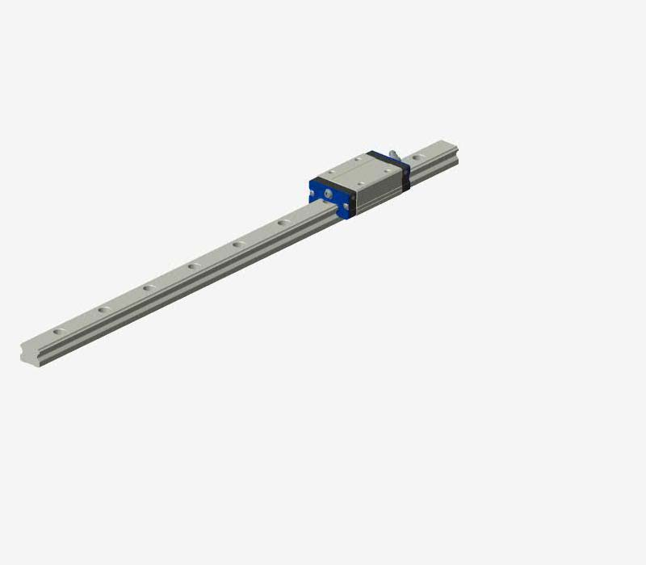
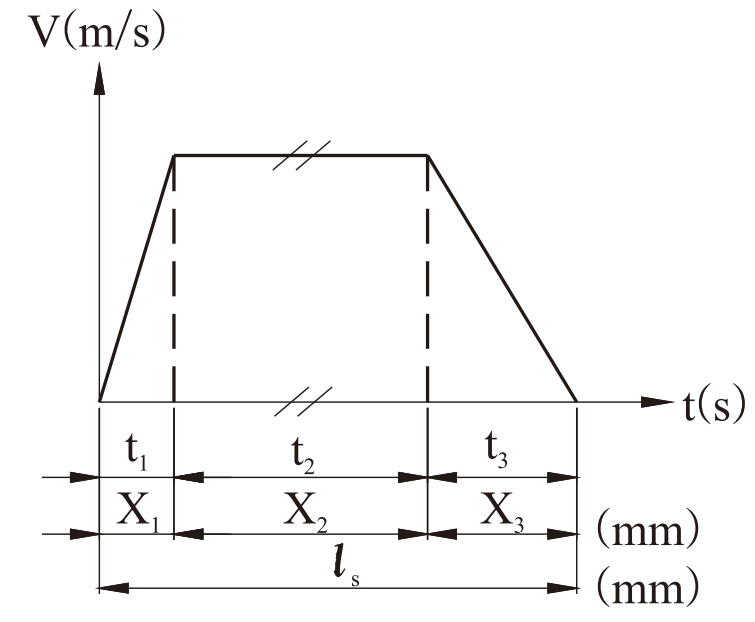
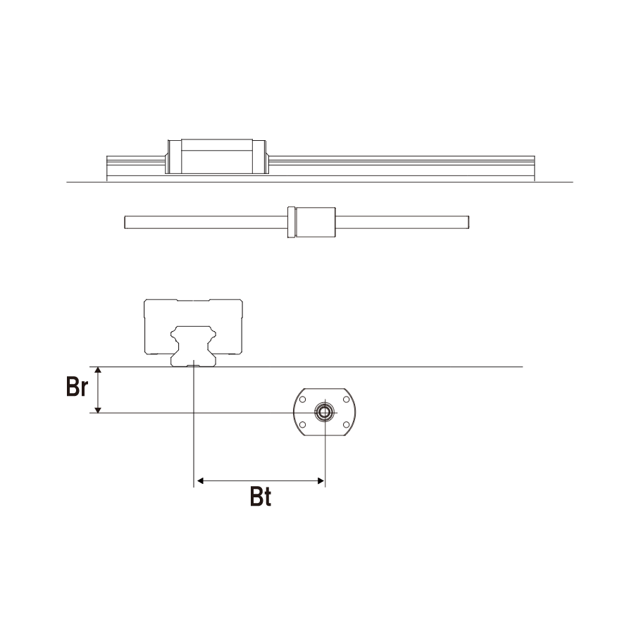

1、型番を選択してください：
2、選択してください：
(1)取付タイプ：
(2)レール本数・ブロック個数：
(3)角度θ=
3、速度条件を記入してください：
(1)速度V=
(2)荷重係数fw=
(3)加速度時間T1=
(4)減速度時間T3=
(5)ストロークLs=
(6)毎分往復数n=
4、使用条件を記入してください：
(1)ブロック仕様：
(2)予圧等級：
(3)推力位置_高さ Br=
(4)推力位置_幅 Bt=
レールスパン Rs=
ブロックスパン Bs1=
ブロックスパン Bs2=
ブロックスパン Bs3=
5、荷重条件を記入してください：
(1)荷重個数：
(2)荷重1: 質量 m1=
位置 Ga1=
位置 Gt1=
位置 Gr1=
(3)荷重2: 質量 m2=
位置 Ga2=
位置 Gt2=
位置 Gr2=
(°)
(m/s)
(s)
(s)
(mm)
(/min)
(mm)
(mm)
(mm)
(mm)
(mm)
(mm)
(kg)
(mm)
(mm)
(mm)
(kg)
(mm)
(mm)
(mm)

3、速度条件：

4、使用条件：

5、荷重条件：

2、取付タイプ：
| 計算アイテム | 計算結果 |
|---|---|
| 静的安全系数fs | |
| 定格寿命L(km) | |
| 寿命時間Lh(小时) |
注意事項: 以上の結果は理論計算値であり、実際の寿命を保証するものではありません。
注記：
1. 本ソフトの計算結果は、入力いただいた諸条件による理論計算となっております。
実際のご使用においては、使用環境、潤滑状態、取り付け部の精度や剛性等の使用条件により異なる場合があります。
2. 静的安全係数(fs)が1.0以下の場合、リニアガイドの基本静定格荷重(Co)を超えているため、使用不可と判断して
寿命計算結果に"---"と表記します。
1.0以上の静的安全係数が確保出来るように形番や使用条件の変更を行い再計算を行ってください。
3. 高速使用(V>2 m/s以上)の場合、他の要因で値が変動する場合も考えられますので、耐久性等、実機での検証を推奨します。
4. その他の取付方式、速度条件、荷重条件がございましたら、AIRTACにご相談ください。
© Copyright AirTAC